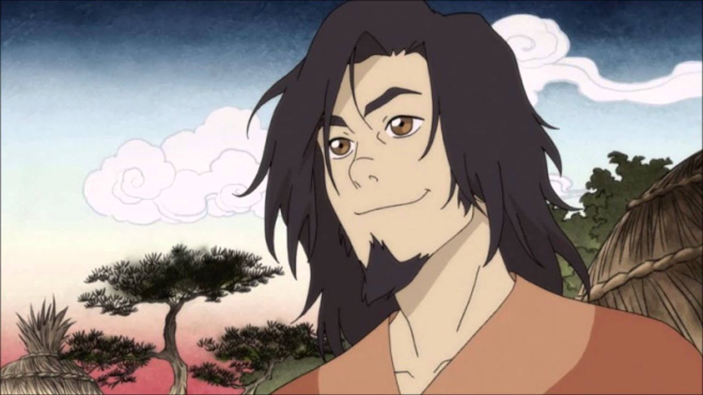
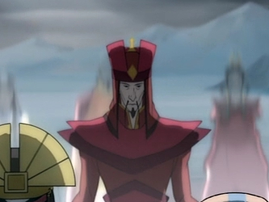
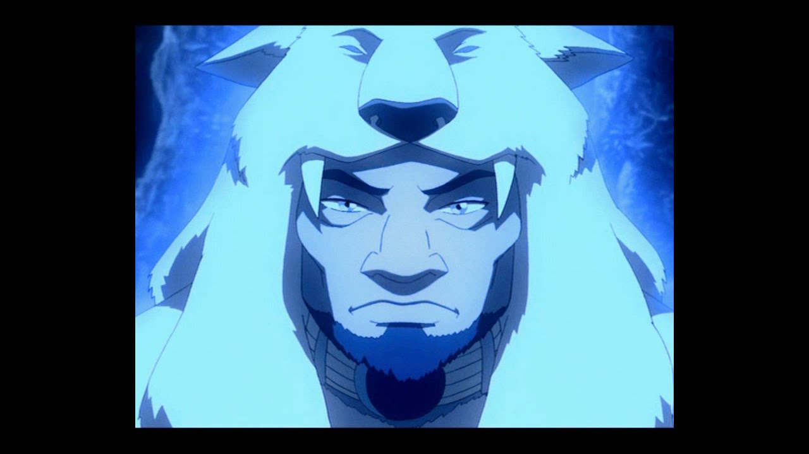
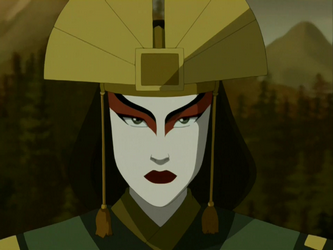
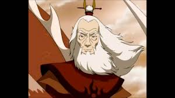
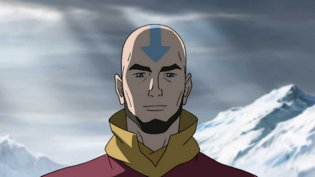
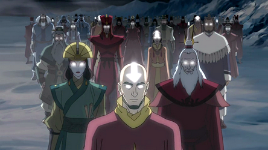

What is an avatar?
Avatars are masters of all four elements: water, earth, fire, and air. Only one avatar can be alive at one time.
Reincarnation Cycle
The Avatar Cycle is based on the passage of the four seasons and coincides with the order in which the first Avatar, Wan, first learned the elements.Fire corresponds to the summer, air to autumn, water to winter, and earth to spring.
| Name | Lifetime | Nationality | Image |
|---|---|---|---|
| Wan | *c. 9,829 BG (Beginning of the Avatar Cycle and the Era of the Avatar) | *Fire Lion Turtle |  |
| Salai | Unknown | Unknown | No existing images |
| Yangchen's predecessor | Unknown | Fire Nation |  |
| Yangchen | Unknown-345 BG | Air Nomads, Western Air Temple |  |
| Kuruk | 345 - 312 BG | Water Tribe, Northern Water Tribe |  |
| Kyoshi | 312 BG - 82 BG | Earth Kingdom |  |
| Roku | 82 BG - 12 BG | Fire Nation |  |
| Aang | *12 BG - 153 AG | Air Nomads, Southern Air Temple |  |
| Korra | *153 AG - present | Water Tribe, Southern Water Tribe |  |
*Before Avatar Wan there were no nations. People lived on lion turtles which are wise animals that are the biggest in the avatar world.
*BG stands for "before genocide". It is the equivalent to "BC".
*Likewise, AG stands for "after genocide". It is the equivalent to "AD".
*The show Avatar: The Last Airbender covers the life of Avatar Aang. Its successsor, The Legend of Korra, is about the life of Avatar Korra. I will only cover Avatar: the Last Airbender on this site.
- Avatar State
- 
- The avatar state is a defense mechanism and it was designed to empower the avatar with the skills and knowledge of their past lives. The glow is the combination of all the current avatar's past lives. All of their energy is focused through the current avatar's body. In the Avatar State, the avatar is at their most powerful, but also at their most vulnerable. If an avatar is killed in the Avatar State, the reincarnation cycle will be broken and the Avatar will be no more.